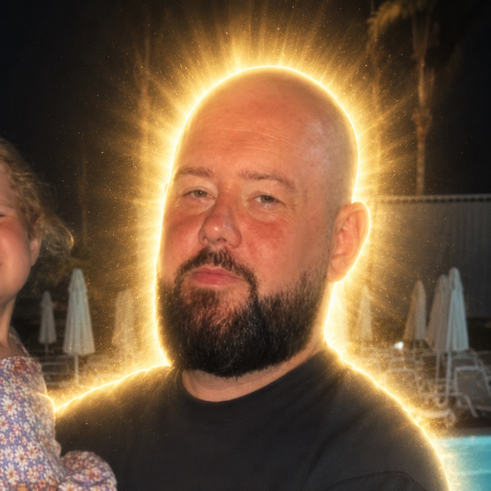

He didn't freeze. He didn't film it.
He grabbed his hurl.
Driving past with his friend Andre, Maitiu Mág Tighearnán, a 32-year-old father from West Belfast, came across a man being attacked with a knife. He went to the boot of the car and grabbed the first thing he could — his son's hurl, still there from practice earlier that evening — and got stuck in. Andre wrestled the attacker down, another bystander kicked the knife away, and they held on until police arrived.
The victim, a man in his 40s, survived — though the court heard he lost an eye in the attack. A man has been charged with attempted murder and refused bail. North Belfast MP John Finucane said the men's "extraordinary courage and bravery" may well have saved a life; the PSNI praised their "incredible bravery and community spirit."

"People are calling us heroes, but to be honest I'd like to think most people would've got stuck in and helped if they could." Maitiu Mág Tighearnán — The Irish News